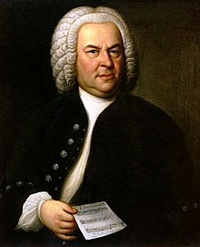

Classical Music: Preferred Recordings
A connoisseur of classical music, I'm particular about the recordings that I listen to. Below are some well-known pieces and my suggested recordings.
| Composer | Song | Recording |
|---|---|---|
| Gregorio Allegri (1582 - 1652) | Miserere Mei, Deus | Tallis Scholars, Tenebrae |
| Johann Sebastian Bach (1685 - 1750) | Violin concertos, BWV 1041–1043 | Manze/Podger, Podger (Brecon Baroque), Julia Fischer, Stern/Perlman (Double Concerto) |
| Sonatas and Partitas for Solo Biolin, BWV 1001–1006 | Rachel Podger, Itzhak Perlman | |
| Cello Suites, BWV 1007-1012 | Piere Fournier | |
| Organ Compositions | Peter Hurford, Simon Preston | |
 Wolfgang Amadeus
Mozart (1756 - 1791) Wolfgang Amadeus
Mozart (1756 - 1791)
|
Concerto for Flute (& Harp), K299, K313 | James Galway/Marisa Robles, Emmanuel Pahud/ Claudio Abbado |
| Serenade No. 10 in B Flat, K361/370a | Charles MacKerras | |
| Concerto for Bassoon, K191 | Thuneman (Marriner), Thurman (Friedli) | |
| Oboe Concerto in C Major, K314 | Albrecht Mayer, Heinz Holliger | |
| Clarinet Concerto in A major, K622 | Martin Frost, Sabine Meyer | |
 Ludwig van
Beethoven (1770 - 1827) Ludwig van
Beethoven (1770 - 1827)
|
Symphony No. 5 in C Minor, Op. 67 | Carlos Kleiber |
| Symphony No. 7 in A Major, Op. 92 | Carlos Kleiber | |
| Symphony No. 9 in D Minor, Op. 125 | Von Karajan 1963 (Berlin Philharmonic) |